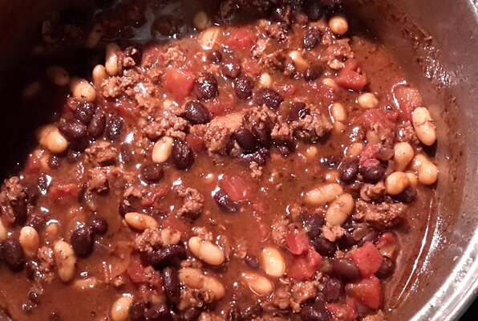

Chocolate Lamb Chili

Description
Chocolate and lamb in chili? Of Course!!! This is a wonderful chili recipe,
concocted by my son Bryan. We use Icelandic lamb because it is really lean. Lean lamb is a must.
Ingredients
- 1 medium onion, chopped
- 1 pound lean ground lamb
- 2 tablespoons olive oil
- ½ teaspoon red pepper flakes
- ½ tablespoon dried basil
- 1 teaspoon cumin
- ⅛ teaspoon cinnamon
- 2 large cloves garlic, minced
- 3 ½ tablespoons chili powder
- ½ teaspoon dried oregano
- 1 teaspoon unsweetened cocoa powder
- 1 teaspoon white sugar
- 1 bay leaf
- salt and pepper to taste
- 1 (14.5 ounce) can diced tomatoes with juice
- 4 cups red beans, with liquid
Steps
- In a large pot, cook onions and ground lamb in olive oil over medium heat.
- When onions are soft and meat browned, season with red pepper flakes, basil, cumin,
cinnamon, garlic, chili powder, dried oregano, cocoa powder, sugar, and bay leaf, and
salt and pepper to taste. Cook for 1 or 2 minutes. Stir in tomatoes and beans. Increase
heat to bring soup to a boil. Reduce heat, and simmer for 15 minutes.